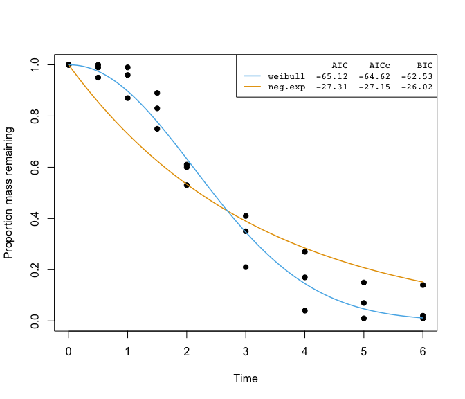
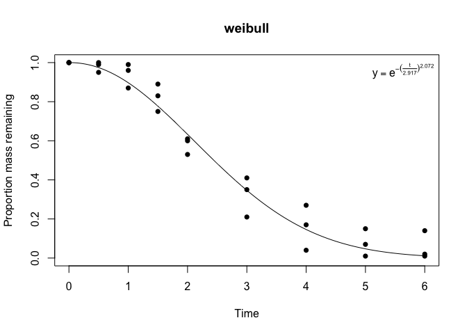
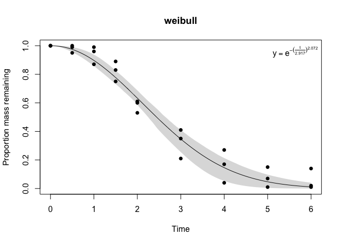
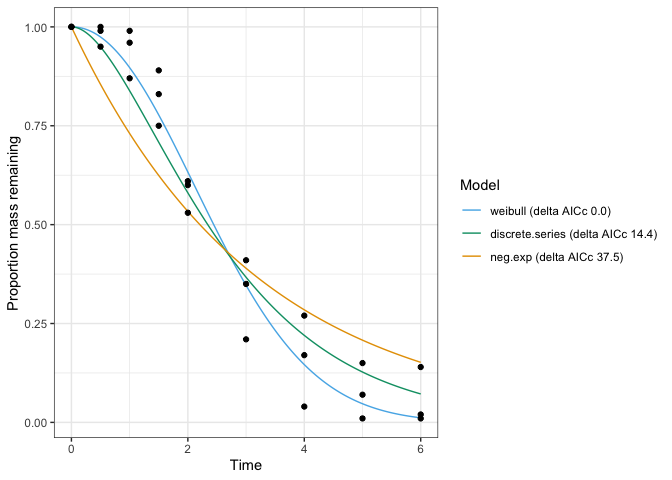

R package for fitting and testing alternative models for single cohort litter decomposition data
Installation
Install the released version from CRAN:
install.packages("litterfitter")or the development version from GitHub:
# install.packages("remotes")
remotes::install_github("traitecoevo/litterfitter")Getting started
The key function is fit_litter, which can fit 6 different types of decomposition trajectories. As a toy example, take a litterbag study with three replicate bags harvested at each of nine times (in years). Decomposition is slow at first, then speeds up, as often happens while decomposers colonise the litter:
toy <- data.frame(
time = rep(c(0, 0.5, 1, 1.5, 2, 3, 4, 5, 6), each = 3),
mass.remaining = c(1, 1, 1, 1, 0.99, 0.95, 0.96, 0.87, 0.99,
0.75, 0.83, 0.89, 0.53, 0.6, 0.61, 0.41, 0.35, 0.21,
0.04, 0.27, 0.17, 0.01, 0.07, 0.15, 0.14, 0.01, 0.02)
)Fit a Weibull curve to it. The fitted object is a litfit object:
fit <- fit_litter(
time = toy$time,
mass.remaining = toy$mass.remaining,
model = "weibull",
iters = 500
)
class(fit)You can visually compare the fits of different non-linear equations with the plot_multiple_fits function. The single-rate negative exponential cannot capture the early lag that the Weibull curve fits:
plot_multiple_fits(
time = toy$time,
mass.remaining = toy$mass.remaining,
model = c("neg.exp", "weibull"),
iters = 500
)
Calling plot on a litfit object will show you the data, the curve fit, and even the equation, with the estimated coefficients:
plot(fit)
The summary of a litfit object will show you some of the summary statistics for the fit.
#> Summary of litFit object
#> Model type: weibull
#> Number of observations: 27
#> Parameter fit (beta): 2.92
#> Parameter fit (alpha): 2.07
#> Time to 50% mass loss: 2.44
#> Implied steady state litter mass: 2.58 in units of yearly input
#> AIC: -65.1217
#> AICc: -64.6217
#> BIC: -62.53Bootstrapping shows the uncertainty in the parameter estimates and in the fitted curve:
boot <- bootstrap_parameters(fit, nboot = 500)
plot(fit, boot = boot)
Comparing models and tidy output
fit_litter_all() fits several models at once, and glance() gives a model comparison table. tidy(), glance() and augment() return results as data frames for further analysis or custom plots:
fits <- fit_litter_all(
time = toy$time,
mass.remaining = toy$mass.remaining,
models = c("neg.exp", "weibull", "discrete.series"),
iters = 500
)
glance(fits)[, c("fit", "nparams", "AICc", "delta_AICc", "time_to_50")]
#> fit nparams AICc delta_AICc time_to_50
#> 1 weibull 2 -64.62170 0.00000 2.444290
#> 2 discrete.series 3 -50.24970 14.37200 2.341991
#> 3 neg.exp 1 -27.15226 37.46945 2.206548The Weibull model is strongly preferred here. The two-pool discrete.series model can produce some lag, but it fits less well despite having an extra parameter, and the single-rate neg.exp model fits worst.
With ggplot2 installed, autoplot() draws fits, model comparisons and bootstrap distributions as ggplot objects:

Element dynamics
fit_element() fits how the proportion of an element remaining (e.g. nitrogen) changes as mass is lost, using the model of Parton et al. (2007). See the vignette for details.